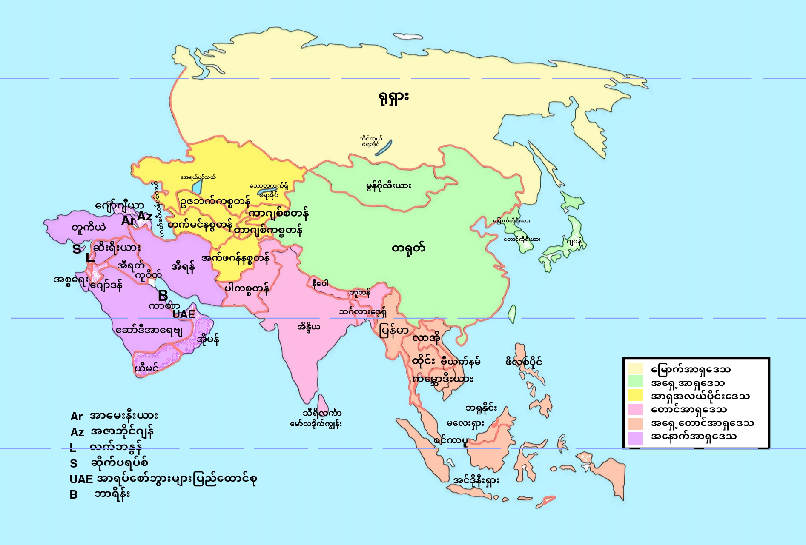

<!DOCTYPE html>
<html lang="en"></html>
<head>
  <meta charset="UTF-8">
  <meta name="viewport" content="width=device-width, initial-scale=1.0">
  <link rel="stylesheet">
  <title> Bandu La's Project!!!</title>
</head>
<body> 
  <h1> <b> - Bandu La's Project!! - </b></h1>
  
 <hr>
  <h1><b>Project Members - Responsible for:</b></h1>
  <p> 1. > <b>Khant Thu Tun</b> - Drawing the Map.
  <br> 2. > <b>Htoo Khant Win</b> - Creatvity/Creation.
  <br> 3. > <b>Ei Phoo Yadanar Khaing</b> - Finding famous Places and landmarks of Asia. <b>Managing work for members.</b> 
  <br> 4. > <b>Hie Eh Chan</b>- Finding the biggest country, the smallest countries and towns, drawing the compass.
  <br> 5. > <b>Lae Kyi Phyu</b> - Acquiring North Asia and Central of Asia.
  <br> 6. > <b>Aae Sandi Cho</b> - Acquiring South Asia and Southeast Asia.
  <br> 7. > <b>Sin Win WIn Phyu</b> - Acquiring East Asia, West Asia and finding smallest details of Asia.
  <br> 8. > <b>Wint Sandi Phoo</b> - Acquiring Asia.
  <br> 9. > <b>Thinzar Phway Phway</b> - Acquiring Asia and Assist in drawing the map. </p>
<br><br><br><br>
  <hr>
</body>
